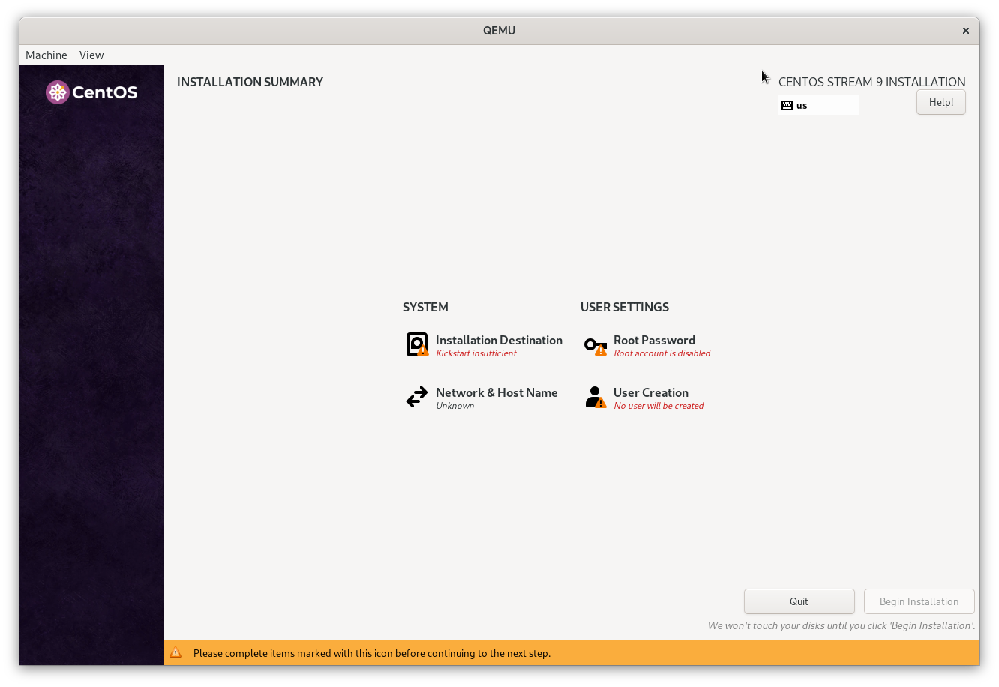

Building an Interactive Installer for bootc
A question popped up today on the #bootc:fedoraproject.org Matrix channel on how to create an interactive installer for a bootable container. This is a quick write up of how to use some details in bootc-image-builder to generate an interactive Anaconda ISO.
You can provide custom kickstarts in bootc-image-builder. The README mentions that:
Note that bootc-image-builder will automatically add the command that installs the container image (ostreecontainer ...), so this line or any line that conflicts with it should not be included. See the relevant Kickstart documentation for more information. No other kickstart commands are added by bootc-image-builder in this case, so it is the responsibility of the user to provide all other commands (for example, for partitioning, network, language, etc).
This implies that if we provide an empty custom kickstart we will end up with an incomplete kickstart containing only the ostreecontainer directive:
# see https://github.com/osbuild/bootc-image-builder?tab=readme-ov-file#anaconda-iso-installer-options-installer-mapping
[customizations.installer.kickstart]
contents = ""
And then build the image:
sudo podman run \
--rm \
-it \
--privileged \
--pull=newer \
--security-opt label=type:unconfined_t \
-v $(pwd)/config.toml:/config.toml:ro \
-v $(pwd)/output:/output \
quay.io/centos-bootc/bootc-image-builder:latest \
--type anaconda-iso \
quay.io/centos-bootc/centos-bootc:stream9
This will put Anaconda into interactive mode so the user can provide the missing information. You can also enable extra modules for Anaconda though I haven't tried so myself.
Note that you will need to create partitions and label /boot as boot so the installed system can find its boot partition.